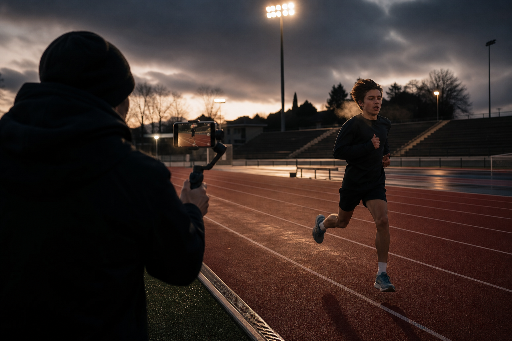
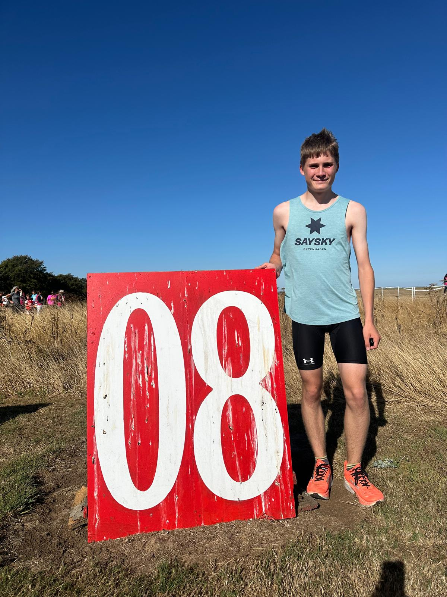
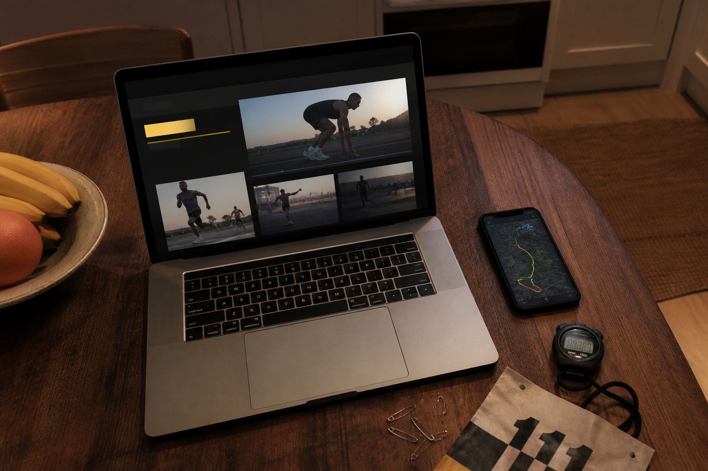
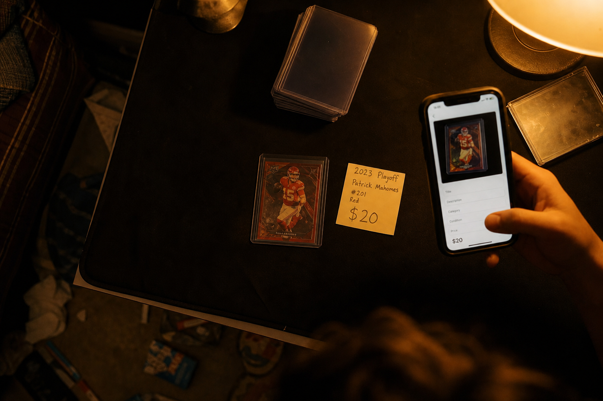

Year 12 · 2026–27
Learn the kit on real sessions. First films at the new standard after sub-16. Audio test. A short piece on how young runners get shown. Build the look of the channel.
On the track: live in the 15s.

Basingstoke & Mid Hants AC · QMC 2026–28 · UAL Creative Media
Ten months from first parkrun to 16:01. The flair is already public. The course is the camera upgrade — not a new personality.
01 · Start here
02 · The week
Eight units, two years, 100% coursework. Units 1–7 are pass / fail. Unit 8 is the whole grade. Most weeks: shoot or edit something, write a short log of why you did it that way, hand it in on a blog or Padlet. No June exam about a TV drama someone else picked.

Learn the kit on real sessions. First films at the new standard after sub-16. Audio test. A short piece on how young runners get shown. Build the look of the channel.
On the track: live in the 15s.

Audio + visual + hub as proper pieces. Then Unit 8: one planned season of films that is the certificate.
On the track: break 15. Hunt 14.
03 · One look
Not “Jack’s random videos.” One name, one look, one promise.
| Piece | Why a brand / college wants it |
|---|---|
| Origin cut · 90 seconds | Parkrun with dad → first win → 16:01 in 10 months. The story, once. |
| Session films | Craft. Threshold / reps with splits on screen. |
| Race-POV | The Bester-style piece. Parkrun / target 5k. |
| Debrief audio | What the clock said. What you change. |
| Season hub | Proof you can build a place, not only a clip. |
| One-page media kit | Name, times, links, what you stand for. |
04–05 · The folder
Learn-the-tools units first. Pass / fail. Use them to get the channel standing.
A. FPL-style weekly show, running subject. Last race · what changes · next target. 8–12 minutes.
B. Interview a senior who already owns 15 or 14.
C. Race-week voice note over silent footage.
A. Full key session. Splits on screen. No talking-head until the end.
B. Race-POV of a target 5k. Start, splits, last 400, debrief.
C. 90-second origin: boots, first parkrun, 16:01 board.
One page: films, official times, Strava, Power of 10, parkrun, next race.
A clean hub beats a half-built game every time.
06 · The whole grade
About 350 words of plan, the films, a journal, a debrief against the plan. Ask the college to accept the topic early.
07 · Steal this

They make the running brand sharper. They do not get their own channel on this course.
| Interest | Steal this | Put it here | Leave it out of |
|---|---|---|---|
| FPL YouTubers | Same show every week. Review / changes / next pick. Deadline energy. | Unit 5 audio. Thumbnail practice. | Unit 8 title. You are not an FPL tipster. |
| Strava | Public clock, photos, titles with flair. That is the brand voice. | Unit 7 hub. End cards. Same captions. athletes/174172689 | A new “serious” voice that kills the flair. |
| Cards / eBay / shows | What something is worth. Listing. Showing up in a room. | Unit 3 media kit. How I’d pitch a shop. | A trading-card mini-doc as the main project. |
| Football | Origin. Team brain. Knowing a crowd. | 90-second origin cut. Maybe matchday vs race-day. | Equal billing with the 5k. |
08 · Before September
None of this needs the college kit. Phone + a cheap mic + a free edit app. Tick them off — it stays on this phone.
I’m not picking media instead of running. I’m picking the course where the running is the media — and the folder is the start of the platform.
Already on camera
Press play on each. The 08 photo stays on the homepage so the page cannot go blank. Tell us which of these three you can actually see.